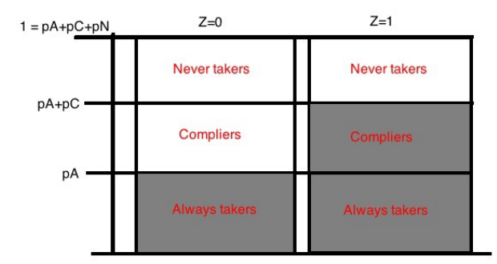

2001-09-23
Lectures 3–4 covered selection on observables: identification, conditioning, construction, estimation.
What identifying variation can we use when conditional ignorability is not credible?
Today:
Lectures 1–4 assumed
\[ (Y(1),Y(0)) \perp D \mid X, \qquad 0 < P(D=1\mid X) < 1. \]
DML’s contribution is estimation, not identification. AIPW is doubly robust and targets the ATE. Neyman orthogonality and cross-fitting let you use ML nuisance models without losing \(\sqrt n\) inference.
\[ \boxed{ \text{Cross-fitted, orthogonal, ML-based estimation} \not\Rightarrow \text{conditional ignorability holds} } \]
DML repairs estimation. It has nothing to say if \(D\) and \(Y\) share an unmeasured confounder.
Example: schooling and wages, confounded by ability. No available proxy exhausts “ability.” Adding controls does not help — the confounder is not in \(X\).
What identifying variation can we use when we do not believe we have measured everything that confounds \(D\) and \(Y\)?
Find \(Z\) such that
Given such a \(Z\), use the variation in \(D\) driven by \(Z\): variation we know is not confounded, because \(Z\) is not.
This is not conditioning our way out of confounding. It substitutes a different source of variation in \(D\) for the confounded variation we were trying to use before.
\[ Y_i = \alpha + \theta D_i + \varepsilon_i, \qquad D_i = \pi_0 + \pi_1 Z_i + \nu_i \]
\[ \text{Cov}(Z_i,\varepsilon_i)=0, \qquad \pi_1 \neq 0, \qquad \theta_i = \theta \text{ for all } i \]
\[ \hat\theta_{2SLS} = \frac{\text{Cov}(Z,Y)}{\text{Cov}(Z,D)} \]
The last assumption — constant effects — is doing more work than the notation shows.
Write \(\tau_i = Y_i(1)-Y_i(0)\). Split units by type: compliers (\(c\)), always-takers (\(a\)), never-takers (\(n\)), defiers (\(d\)) — no assumption yet that defiers are absent.
\[ ITT_Y = \pi_c E[\tau\mid c] - \pi_d E[\tau\mid d], \qquad ITT_D = \pi_c - \pi_d \]
Defiers move opposite the instrument, so their contribution to numerator and denominator both flip sign.
If \(\tau_i = \theta\) for every unit, \(E[\tau\mid c] = E[\tau\mid d] = \theta\):
\[ \frac{ITT_Y}{ITT_D} = \frac{\theta(\pi_c-\pi_d)}{\pi_c-\pi_d} = \theta \]
for any \(\pi_d\). Under constant effects, defiers cancel exactly. Monotonicity is not needed.
The complier effect is 2. The defier effect is \(-8\). The Wald estimate, 5.33, lies outside the range of both — not a weighted average of any real subgroup effect, because the defier weight in the ratio is effectively negative.
toy_data_iv.R, section 1, simulates this population directly (\(N=100{,}000\)) and confirms the same number, then drops defiers and confirms the Wald estimator recovers \(\tau_c=2\) exactly.
Constant effects makes an estimator’s target well defined without extra assumptions — true of OLS in Lecture 4, true of the Wald estimator here.
Drop constant effects, and each estimator needs a new assumption to stay interpretable: OLS needed full covariate interactions to avoid the variance-weighting result; the Wald estimator needs monotonicity to rule out defiers.
Heterogeneity does not break identification outright. It removes the free pass that a homogeneous-effects assumption was quietly providing.
Binary instrument \(Z_i\in\{0,1\}\), binary treatment \(D_i\in\{0,1\}\).
Potential treatments: \(D_i(1)\), \(D_i(0)\) — the treatment \(i\) would take under each value of \(Z\).
Potential outcomes indexed by both arguments in general, \(Y_i(z,d)\); exclusion (below) collapses this to \(Y_i(d)\).
Observed values: \(D_i = D_i(Z_i)\), \(Y_i = Y_i(D_i(Z_i))\).
No constant-effects assumption anywhere in this setup.
Independence and exclusion together replace “\(Z_i\) uncorrelated with \(\varepsilon_i\).” Monotonicity has no counterpart in the constant-effects model, for the reason just shown.
Type is defined by \((D_i(1),D_i(0))\) — unobserved, since we see only \(D_i(Z_i)\), never both potential treatments for the same unit.
| \(D_i(1)\) | \(D_i(0)\) | \(D_i(1)-D_i(0)\) | Type |
|---|---|---|---|
| 1 | 1 | 0 | always-taker |
| 0 | 0 | 0 | never-taker |
| 1 | 0 | 1 | complier |
| 0 | 1 | \(-1\) | defier |
Monotonicity rules out defiers, leaving compliers, always-takers, never-takers.

Population shares by compliance type, under each value of \(Z\). Shaded = treated (\(D=1\)). Samii, Instrumental Variables II (2014), slide 13.
Moving from \(Z=0\) to \(Z=1\) shifts the compliers from unshaded to shaded. Always-takers are shaded in both columns; never-takers are unshaded in both. Only the complier block’s shading responds to \(Z\).
\[ ITT_Y = E[Y_i\mid Z_i=1]-E[Y_i\mid Z_i=0] \]
Independence makes type shares equal across the \(Z=1\) and \(Z=0\) groups — two random samples of the same population, in Samii’s phrasing. This lets us decompose the contrast by type:
\[ ITT_Y = \sum_{t\in\{c,a,n\}} \pi_t\Big(E[Y_i\mid Z_i=1,t] - E[Y_i\mid Z_i=0,t]\Big) \]
Exclusion fixes what each type-conditional mean equals: \(Y_i = Y_i(D_i(Z_i))\), a function of realized treatment alone. Independence tells you the comparison is apples to apples across \(Z\) groups; exclusion tells you what to do with each type’s outcome once you’re inside the comparison.
Always-taker, \(D_i(1)=D_i(0)=1\): realized treatment is 1 under both values of \(Z\), so by exclusion \(Y_i\mid Z=1 = Y_i(1) = Y_i\mid Z=0\). Contrast is zero — because realized \(d\) does not move with \(Z\) for this type, not because \(Z\) being random makes the two group means equal on its own.
Never-taker, \(D_i(1)=D_i(0)=0\): same argument, \(Y_i(0)\) in both arms. Contrast is zero.
Complier, \(D_i(1)=1,D_i(0)=0\): \(Y_i\mid Z=1=Y_i(1)\), \(Y_i\mid Z=0=Y_i(0)\). Contrast is \(Y_i(1)-Y_i(0)\).
\[ ITT_Y = \pi_c\,E[Y_i(1)-Y_i(0)\mid c], \qquad ITT_D = \pi_c \]
\[ \text{LATE} \equiv \frac{ITT_Y}{ITT_D} = E[Y_i(1)-Y_i(0)\mid \text{complier}] \]
Their realized treatment does not change with \(Z\). That is the whole reason. Independence guarantees the always-taker subpopulation looks the same whether you condition on \(Z=1\) or \(Z=0\) — same size, same potential-outcome distribution. Exclusion then says that, given the same realized \(d\), the outcome takes the same value. Both do distinct work; neither alone delivers the zero contrast.
Compliers are the only type whose realized treatment the instrument changes, so they are the only type contributing variation to the ratio.
Types are unobserved, but the complier subpopulation is not undescribable. Abadie (2003): for any \(g(Y,D,X)\),
\[ E[g(Y,D,X)\mid \text{complier}] = \frac{E[\kappa\, g(Y,D,X)]}{E[\kappa]}, \qquad \kappa_i = 1 - \frac{D_i(1-Z_i)}{1-p(X_i)} - \frac{(1-D_i)Z_i}{p(X_i)} \]
with \(p(X_i) = P(Z_i=1\mid X_i)\).
\(\kappa_i=1\) when \((Z_i,D_i)=(1,1)\) or \((0,0)\); \(\kappa_i<0\) when \((Z_i,D_i)=(1,0)\) or \((0,1)\). The negative weights subtract off the always-taker and never-taker contamination sitting in the two matching cells.
Type is never used in the estimate, only to check it. toy_data_iv.R, section 2, runs the full simulation.
Set \(g(Y,D,X)=X_j\) for each covariate to get complier means; compare to the full-sample means to see who the instrument actually moves.
Set \(g\) to the outcome, restricted to \(D=1\) and \(D=0\) appropriately, to get complier outcome means under each arm.
Report this alongside every LATE. A LATE for a narrow complier population is a different finding from a LATE for a broadly representative one, at the same point estimate.
Single binary instrument, no covariates: 2SLS equals the Wald estimator, which equals the LATE for compliers relative to that instrument.
With covariates, multiple instruments, or a continuous instrument: 2SLS is a weighted average of LATEs across complier subpopulations, weights proportional to each subgroup’s share of first-stage variance — the same variance-weighting logic as \(\hat\theta_R\) in Lecture 4.
There is no single “the LATE” in these richer designs. Mogstad, Santos & Torgovitsky (2018): 2SLS with covariates does not target a policy-relevant parameter without further assumptions.
If relevance barely holds (\(ITT_D\approx 0\)):
Diagnostic: first-stage \(F\)-statistic. \(F>10\) is a floor, not a guarantee. Prefer weak-instrument-robust inference (Anderson–Rubin) when in doubt.
Testable implications derive inequalities the data must satisfy if the LATE assumptions hold. A violation rejects them. Passing does not confirm them — Kitagawa (2015) proves these are the strongest testable implications available: they refute, never verify.
Sensitivity analysis does not test anything. It assumes a bounded degree of assumption violation and traces how the estimate moves as that bound widens. It answers “how much does the conclusion depend on the assumption holding exactly?” not “does the assumption hold?”
Both matter. Neither substitutes for the other.
Balke & Pearl (1997), binary \(Z,D,Y\): four inequalities must hold under exclusion, independence, monotonicity, e.g.
\[ P(Y{=}0,D{=}0\mid Z{=}0) + P(Y{=}1,D{=}0\mid Z{=}1) \leq 1 \]
A violation implies at least one of exclusion, independence, monotonicity fails — not which one.
Kitagawa (2015) extends this to continuous \(Y\): \(f(y,D{=}1\mid Z{=}1)\) must dominate \(f(y,D{=}1\mid Z{=}0)\) pointwise in \(y\), and \(f(y,D{=}0\mid Z{=}0)\) must dominate \(f(y,D{=}0\mid Z{=}1)\).
Flip one cell — \(P(Y{=}\text{high},D{=}1\mid Z{=}1)\) at 0.15 instead of 0.30 — and d1_dominance_holds turns FALSE at high. toy_data_iv.R, section 3, runs both versions.
Conley, Hansen & Rossi (2012): stop assuming exclusion holds exactly.
\[ Y_i = \theta D_i + \gamma Z_i + \varepsilon_i, \qquad D_i = \pi Z_i + \nu_i \]
\(\gamma=0\) is exact exclusion. Instead, specify a plausible range \(\gamma\in[-\gamma_{\max},\gamma_{\max}]\) from domain knowledge and trace the identified \(\theta\) across it.
\[ \text{Cov}(Z,Y) = \theta\,\text{Cov}(Z,D) + \gamma\,\text{Var}(Z) \;\Rightarrow\; \theta(\gamma) = \hat\theta_{2SLS} - \frac{\gamma}{\pi} \]
\[ \theta \in \Big[\hat\theta_{2SLS} - \gamma_{\max}/\pi,\; \hat\theta_{2SLS} + \gamma_{\max}/\pi\Big] \]
At \(\gamma_{\max}=1.0\) the identified set touches zero — the conclusion does not survive a direct effect that large. The bound \(\gamma_{\max}\) is a substantive claim, defended the way exclusion itself is defended, not read off the data.
Under the LATE assumptions,
\[ E(Y\mid D{=}1,Z{=}1) = \frac{\pi_a}{\pi_a+\pi_c}E(Y_1\mid a) + \frac{\pi_c}{\pi_a+\pi_c}E(Y_1\mid c), \qquad E(Y_1\mid a) = E(Y\mid D{=}1,Z{=}0) \]
which implies a testable trimming inequality:
\[ E(Y\mid D{=}1,Z{=}1,Y\leq y_q) \;\leq\; E(Y\mid D{=}1,Z{=}0) \;\leq\; E(Y\mid D{=}1,Z{=}1,Y\geq y_{1-q}), \qquad q = \frac{\pi_a}{\pi_a+\pi_c} \]
A symmetric inequality bounds never-takers. Four testable moment inequalities total, estimable directly from data.
No test here proves validity — Kitagawa’s result rules that out in general. What the full kit gives you:
Exclusion is argued, not estimated. The tools above show how much rides on that argument.
Three IV designs, same treatment and outcome.
Design A. \(Z\): randomized encouragement to enroll. Strong first stage. Balanced covariates across \(Z\). No plausible direct path from encouragement to \(Y\).
Design B. \(Z\): distance to nearest facility. Moderate first stage. Distance correlates with local infrastructure quality, a plausible direct determinant of \(Y\).
Design C. \(Z\): a policy varying by birth-cohort cutoff. Weak first stage (\(F=4\)). Reduced form is “significant.”
For each: which assumption is most at risk, and which diagnostic from today would you run first?
Today: canonical IV, LATE, compliers, testing and sensitivity.
Next (Sep 30): IV designs that do not fit the canonical binary-instrument case — judge and leniency instruments, jackknife IV (JIVE), shift-share and Bartik instruments, and how to decompose which piece of a constructed instrument does the identifying work.
Previewed from next week: Kitagawa (2015). Not assigned, useful background: Conley, Hansen & Rossi (2012), “Plausibly Exogenous,” Review of Economics and Statistics.
An instrument does not identify the effect of treatment. It identifies the effect for whoever the instrument moves, under independence, exclusion, and monotonicity.
\[ \boxed{ \text{Valid instrument} \;\neq\; \text{ATE} \qquad \text{Valid instrument} \;=\; \text{LATE for compliers} } \]
Next time: what happens when the instrument has to be built rather than found.